Batchtma can be installed from GitHub using:
# install.packages("remotes") # The "remotes" package needs to be installed
remotes::install_github("stopsack/batchtma")To have vignettes like this current site be available offline via,
e.g., vignette("batchtma"), modify the last
command:
remotes::install_github("stopsack/batchtma", build_vignettes = TRUE)We load the batchtma package and, for convenience with data handling and plotting, components of the tidyverse package:
We construct a toy dataset of 10 individuals (e.g., tumors), each with 40 measurements (e.g., cores on tissue microarrays) per batch. Unlike perhaps in the real world, for each individual tumor, we also have measurements on all the other batches.
set.seed(123) # for reproducibility
df <- tibble(
# Batches:
batch = rep(paste0("batch", LETTERS[1:4]), times = 100),
batchnum = rep(c(1, 5, 2, 3), times = 100),
# Participants:
person = rep(letters[1:10], each = 40),
# Instead of a confounder, we will use a random variable for now:
random = runif(n = 400, min = -2, max = 2),
# The true (usually unobservable biomarker value):
true = rep(c(2, 2.5, 3, 5, 6, 8, 10, 12, 15, 12), each = 40),
# The observed biomarker value with random error ("noise"):
noisy = true + runif(max = true / 3, n = 400) * 4)
df
#> # A tibble: 400 × 6
#> batch batchnum person random true noisy
#> <chr> <dbl> <chr> <dbl> <dbl> <dbl>
#> 1 batchA 1 a -0.850 2 4.63
#> 2 batchB 5 a 1.15 2 2.37
#> 3 batchC 2 a -0.364 2 4.41
#> 4 batchD 3 a 1.53 2 3.54
#> 5 batchA 1 a 1.76 2 3.05
#> 6 batchB 5 a -1.82 2 3.20
#> 7 batchC 2 a 0.112 2 3.88
#> 8 batchD 3 a 1.57 2 2.22
#> 9 batchA 1 a 0.206 2 2.90
#> 10 batchB 5 a -0.174 2 3.82
#> # … with 390 more rowsWe plot the biomarker values (y-axis) by batch
(x-axis), using the plot_batch() function.
Color/shape symbolizes which participant/tumor the measurements came
from. Boxes span from the 25th to the 75th percentile (interquartile
range); thick lines indicate medians; asterisks indicate means.
df %>% plot_batch(marker = noisy, batch = batch, color = person)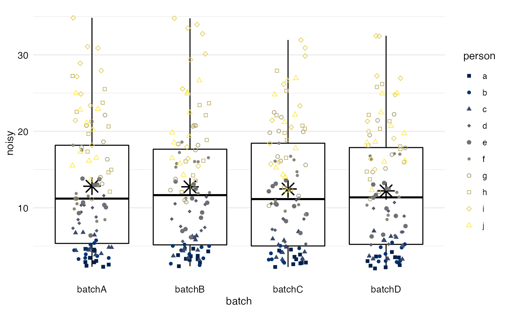
We add systematic differences between batches such that there is differential measurement error between batches in terms of mean and variance. As shown above, true values were the same beyond random error.
df <- df %>%
# Multiply by batch number to differentially change variance by batch,
# divide by mean batch number to keep overall variance the same:
mutate(noisy_batch = noisy * batchnum / mean(batchnum) +
# Similarly, change mean value per batch, keeping overall mean the same:
batchnum * 3 - mean(batchnum) * 3)
df %>% plot_batch(marker = noisy_batch, batch = batch, color = person)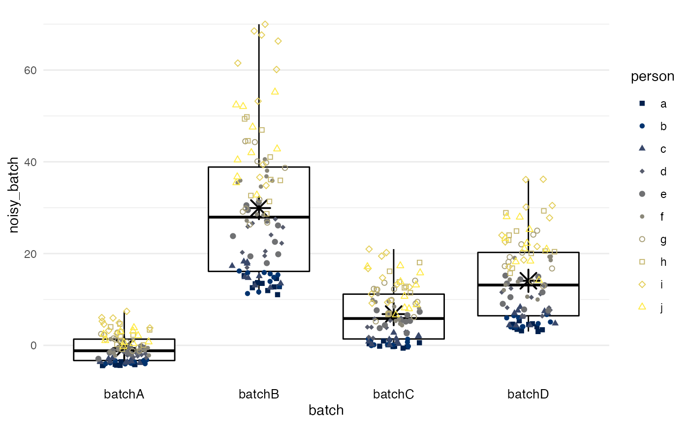
method = simple calculates the mean for each batch and
subtracts the difference between this mean and the grand mean, such that
all batches end up having a mean equivalent to the grand mean.
Differences in variance between batches will remain, if they exist (as
in this example).
df %>%
adjust_batch(markers = noisy_batch, batch = batch,
method = simple) %>%
plot_batch(marker = noisy_batch_adj2, batch = batch, color = person)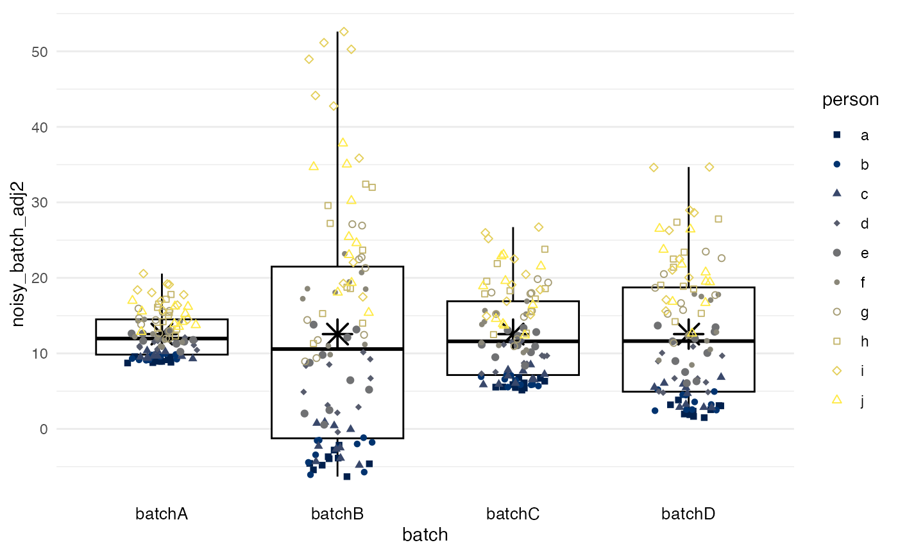
method = standardize performs marginal standardization
by fitting a linear regression model for biomarker values with
batch and confounders as predictors, and
obtains the marginal means per batch if they had the same distribution
of confounders. Differences between these marginal means
and the grand mean are subtracted as in method = simple. In
this example, the confounder is a random variable, and the results are
essentially the same as for method = simple.
df %>%
adjust_batch(markers = noisy_batch, batch = batch,
method = standardize, confounders = random) %>%
plot_batch(marker = noisy_batch_adj3, batch = batch, color = person)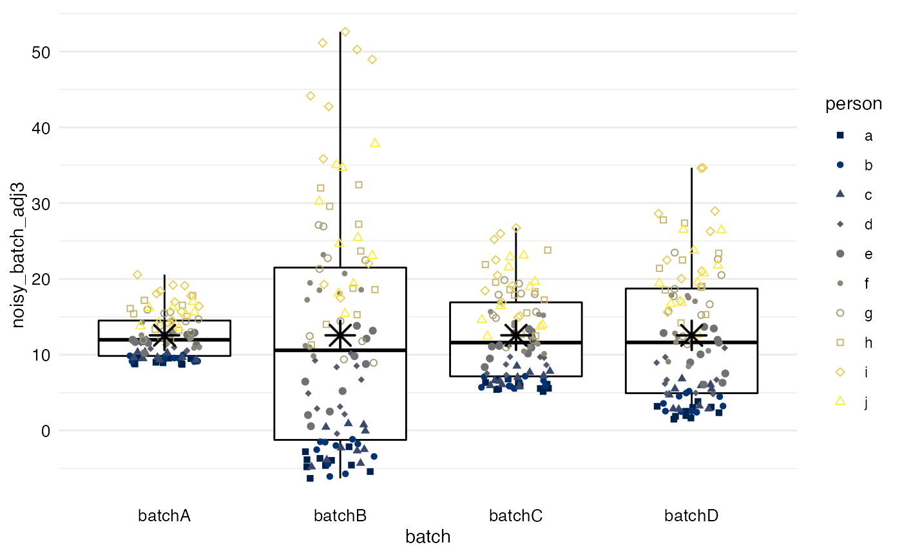
method = ipw predicts the probability of a measurement
being from a specific batch, given the confounders. Mean
differences between batches are obtained from a marginal structural
model with stabilized inverse-probability weights and then used as in
the two preceding methods. Again, the confounder is merely a random
variable in this example.
df %>%
adjust_batch(markers = noisy_batch, batch = batch,
method = ipw, confounders = random) %>%
plot_batch(marker = noisy_batch_adj4, batch = batch, color = person)
#> Warning: Returning data frames from `filter()` expressions was deprecated in dplyr
#> 1.0.8.
#> ℹ Please use `if_any()` or `if_all()` instead.
#> ℹ The deprecated feature was likely used in the dplyr package.
#> Please report the issue at <https://github.com/tidyverse/dplyr/issues>.
#> This warning is displayed once every 8 hours.
#> Call `lifecycle::last_lifecycle_warnings()` to see where this warning was
#> generated.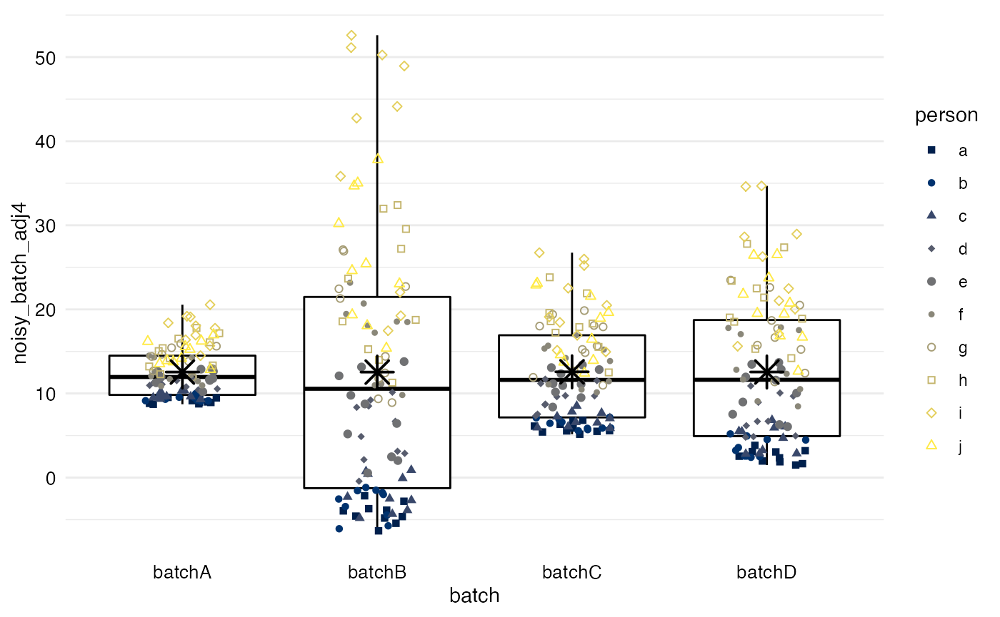
method = quantreg, unlike the three preceding mean-only
methods, addresses two distinct properties of batches: the offset values
(a lower quantile), potentially reflective of background signal, and an
inter-quantile range, potentially reflective of the dynamic range of the
measurement. By default, the first and third quartile
are used.
df %>%
adjust_batch(markers = noisy_batch, batch = batch,
method = quantreg, confounders = random) %>%
plot_batch(marker = noisy_batch_adj5, batch = batch, color = person)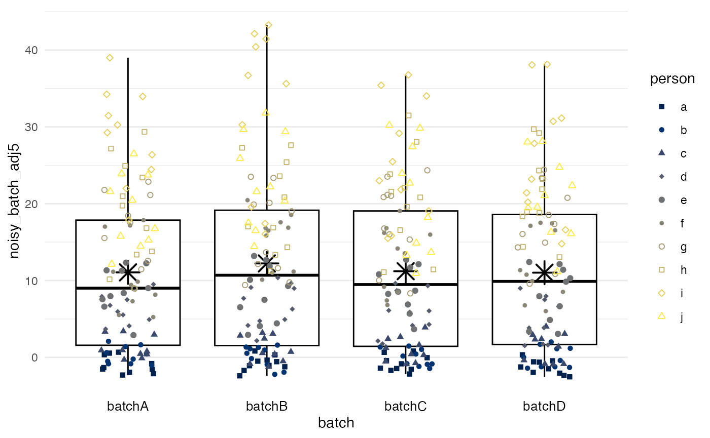
method = quantnorm performs quantile normalization:
values are ranked within each batch, and then each rank is assigned the
mean per rank across batches. Quantile normalization ensures that all
batches have near-identical biomarker distributions. However, quantile
normalization does not allow for accounting for
confounders.
df %>%
adjust_batch(markers = noisy_batch, batch = batch,
method = quantnorm) %>%
plot_batch(marker = noisy_batch_adj6, batch = batch, color = person)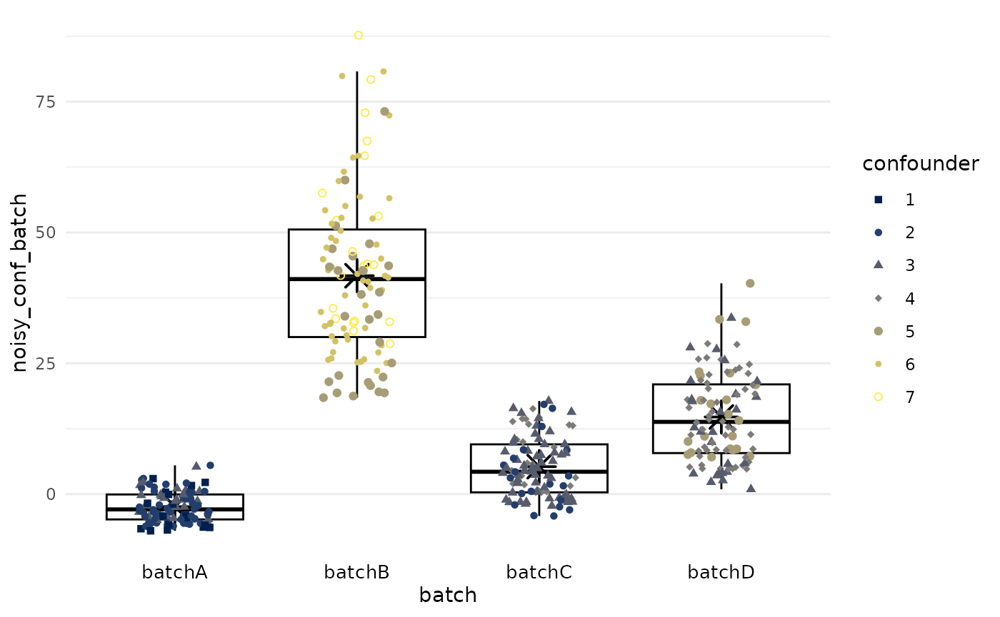
In general, confounding means that exposure and outcome share common
causes. Necessary—but not sufficient—properties of a confounder are that
it needs to be associated with the exposure (batch) and
associated with the outcome(s) (markers). For example, if
systematically higher biomarker values due to batch effects occur in a
tissue microarray with a higher proportion of aggressive tumors, then
batch effect-adjusted biomarker values should account for the
differences in proportions of aggressive tumors.
In the example, a new variable for the biomarker is generated that is
affected by both confounding and batch effects. First, biomarker values
with random error, noisy, are forced to be associated with
the confounder, which in turn is associated with
batch. These values, noisy_conf, should be
considered the new “ground truth.”
All following plots show color/symbol shape by
confounder.
set.seed(123) # for reproducibility
df <- df %>%
# Make confounder associated with batch:
mutate(confounder = round(batchnum + runif(n = 200, max = 2)),
# Make biomarker values associated with confounder:
noisy_conf = noisy + confounder * 3 - mean(confounder) * 3)
df %>% plot_batch(marker = noisy_conf, batch = batch, color = confounder)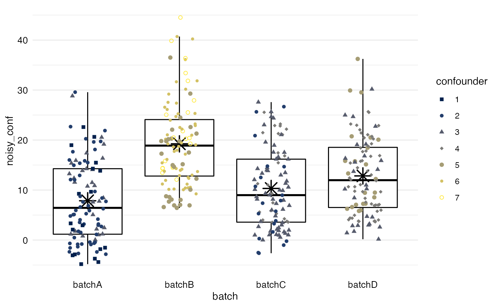
Second, batch effects for mean and variance are added.
df <- df %>%
# Add batch effects to confounded biomarker values:
mutate(noisy_conf_batch = noisy_conf * batchnum / mean(batchnum) +
batchnum * 3 - mean(batchnum) * 3)
df %>% plot_batch(marker = noisy_conf_batch, batch = batch, color = confounder)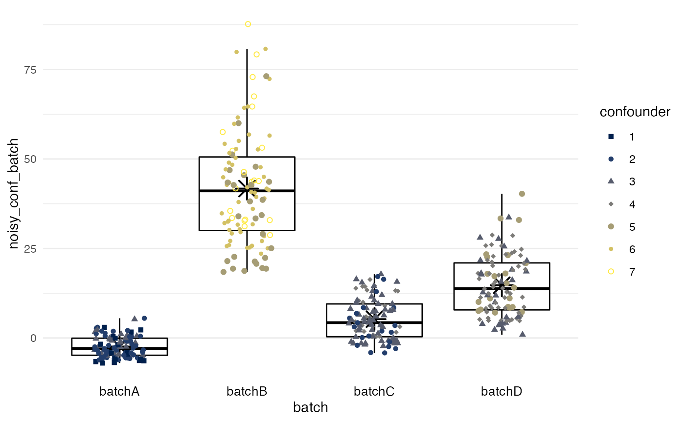
The following examples show to what extent batch effects can be
removed from noisy_conf_batch to recover the “ground
truth,” noisy_conf.
method = standardize reduces batch effects while
allowing batch means to differ because of confounders. Batches with
higher true biomarker values associated with the confounders, like batch
B, retain higher means after batch effect adjustment.
df %>%
adjust_batch(markers = noisy_conf_batch, batch = batch,
method = standardize, confounders = confounder) %>%
plot_batch(marker = noisy_conf_batch_adj3, batch = batch, color = confounder)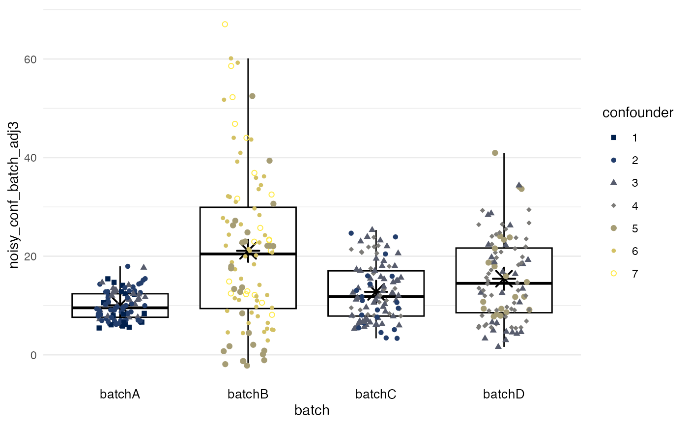
method = ipw also reduces batch effects while allowing
batch means to differ because of confounders. As with marginal
standardization, differences in variance between batches are not
addressed.
df %>%
adjust_batch(markers = noisy_conf_batch, batch = batch,
method = ipw, confounders = confounder) %>%
plot_batch(marker = noisy_conf_batch_adj4, batch = batch, color = confounder)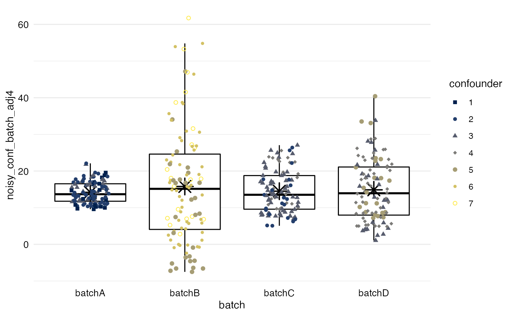
method = quantreg reduces for batch effects of offset
and dynamic range separately, accounting for differences in confounders.
In the example, batch B with its high levels of the
confounder retains somewhat higher values and a higher
variance, unlike with the two preceding mean-only methods.
df %>%
adjust_batch(markers = noisy_conf_batch, batch = batch,
method = quantreg, confounders = confounder) %>%
plot_batch(marker = noisy_conf_batch_adj5, batch = batch, color = confounder)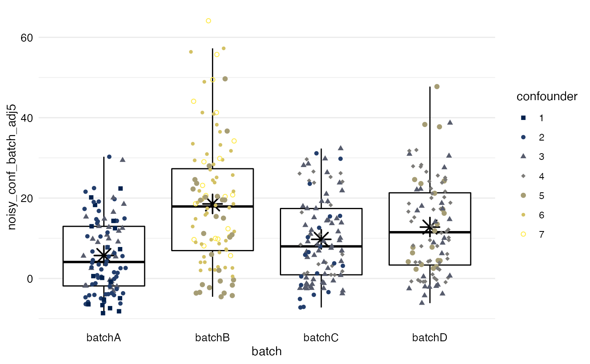
method = simple leads to all batches having the same
mean after adjustment. In the example, this method ignores that batch B
should have higher values because of higher values of the
confounder.
df %>%
adjust_batch(markers = noisy_conf_batch, batch = batch,
method = simple, confounders = confounder) %>%
plot_batch(marker = noisy_conf_batch_adj2, batch = batch, color = confounder)
#> Batch effect correction via 'method = simple' was requested.
#> This method does not support adjustment for confounders (confounder). They will be ignored.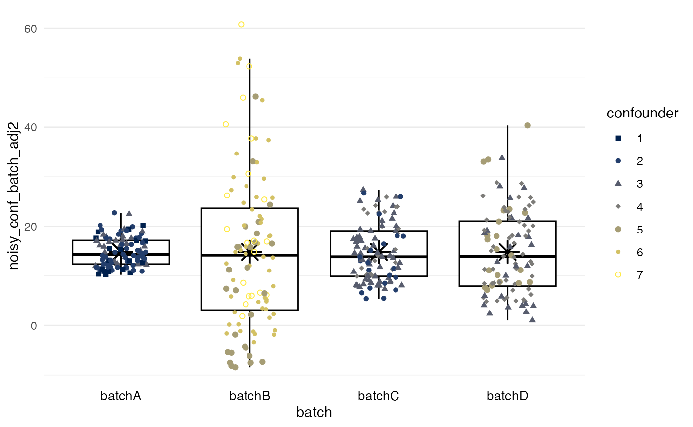
method = quantreg also ignores the confounder.
df %>%
adjust_batch(markers = noisy_conf_batch, batch = batch,
method = quantnorm, confounders = confounder) %>%
plot_batch(marker = noisy_conf_batch_adj6, batch = batch, color = confounder)
#> Batch effect correction via 'method = quantnorm' was requested.
#> This method does not support adjustment for confounders (confounder). They will be ignored.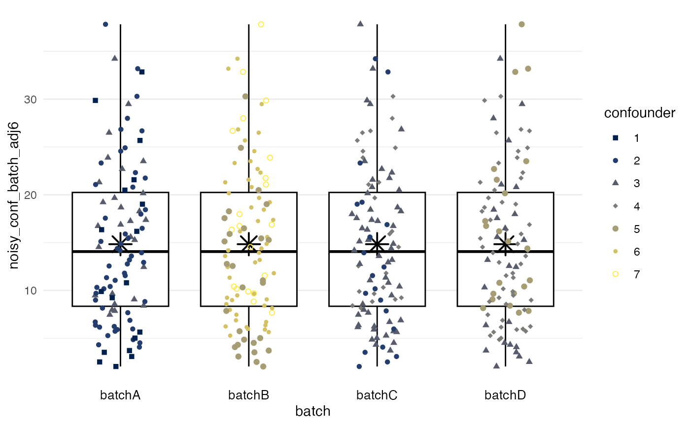
batchtma can handle missing biomarker values, which is a common phenomenon in tissue microarray studies. No coding changes are needed.
This situation is different from gene expression studies, where measured genes are typically measured on all batches (e.g., microarrays) and methods like ComBat can “borrow” information from the other markers (genes) measured on the same batch.
In batchtma, adjustments are done separately for each marker, even if
multiple biomarkers are batch-adjusted with one call of
adjust_batch(markers = c(biomarker_a, biomarker_b, biomarker_c), ...)
and different rows (e.g., tumors) have missing values for different
columns (biomarkers). Thus, no values will be excluded because of
missingness in another marker.
When running adjust_batch(), the dataset is returned
with the batch effect-adjusted variables added at the end. Yet what did
adjust_batch() do and how well did the methods used for
batch effect correction fit to the data that they were applied to?
Adjustment for batch effects relies on regression models for methods
standardize, ipw, and quantreg;
in addition, method = simple estimates means per batch.
The diagnose_models() function provides an overview of
what adjust_batch() did, shows overview of the adjustment
models, and provides access to detailed model diagnostics.
To obtain an overview of model diagnostics,
diagnose_models() is called on the return values of
adjust_batch():
# df2 is the new dataset that also contains "noisy_conf_batch_adj2":
df2 <- df %>% adjust_batch(markers = noisy_conf_batch, batch = batch,
method = standardize, confounders = confounder)
# Show overview of model diagnostics:
diagnose_models(df2)
#> Dataset after batch effect adjustment using 'method = standardize'
#> Variable defining batches: batch
#> Adjusted variables: noisy_conf_batch_adj3
#> Confounders: confounder
#>
#> Estimated adjustment parameters:
#> # A tibble: 4 × 3
#> marker .batchvar batchmean
#> <chr> <chr> <dbl>
#> 1 noisy_conf_batch batchA -12.4
#> 2 noisy_conf_batch batchB 20.6
#> 3 noisy_conf_batch batchC -7.51
#> 4 noisy_conf_batch batchD -0.683
#>
#> Models for adjustment:
#> [[1]]
#> [[1]][[1]]
#>
#> Call:
#> stats::lm(formula = stats::as.formula(paste0("value ~ .batchvar +",
#> paste(confounders, collapse = " + ", sep = " + "))), data = .x)
#>
#> Coefficients:
#> (Intercept) .batchvarbatchB .batchvarbatchC .batchvarbatchD
#> -8.469 33.079 4.930 11.759
#> confounder
#> 2.893In this example, method = standardize fits a linear
regression model with batch and confounders as exposure and the
unadjusted biomarker as the outcome. This model can be extracted
directly from diagnose_models():
fit <- diagnose_models(data = df2)$model_fits[[1]][[1]]
summary(fit)
#>
#> Call:
#> stats::lm(formula = stats::as.formula(paste0("value ~ .batchvar +",
#> paste(confounders, collapse = " + ", sep = " + "))), data = .x)
#>
#> Residuals:
#> Min 1Q Median 3Q Max
#> -20.634 -5.834 -0.714 4.626 42.827
#>
#> Coefficients:
#> Estimate Std. Error t value Pr(>|t|)
#> (Intercept) -8.4686 1.7092 -4.955 1.08e-06 ***
#> .batchvarbatchB 33.0786 2.9225 11.319 < 2e-16 ***
#> .batchvarbatchC 4.9297 1.4606 3.375 0.000811 ***
#> .batchvarbatchD 11.7585 1.8269 6.436 3.55e-10 ***
#> confounder 2.8926 0.6837 4.231 2.90e-05 ***
#> ---
#> Signif. codes: 0 '***' 0.001 '**' 0.01 '*' 0.05 '.' 0.1 ' ' 1
#>
#> Residual standard error: 9.275 on 395 degrees of freedom
#> Multiple R-squared: 0.7684, Adjusted R-squared: 0.7661
#> F-statistic: 327.7 on 4 and 395 DF, p-value: < 2.2e-16The marginally standardized means per batch are the adjustment
parameters estimated by this procedure. They are returned by
diagnose_models() as adjust_parameters:
diagnose_models(df2)$adjust_parameters
#> # A tibble: 4 × 3
#> marker .batchvar batchmean
#> <chr> <chr> <dbl>
#> 1 noisy_conf_batch batchA -12.4
#> 2 noisy_conf_batch batchB 20.6
#> 3 noisy_conf_batch batchC -7.51
#> 4 noisy_conf_batch batchD -0.683Diagnostics for regression models can be performed on fitted models just as for any other regression model in R. For example, residuals vs. fitted can be plotted:
tibble(fitted = fitted.values(fit),
residuals = residuals(fit)) %>%
ggplot(mapping = aes(x = fitted, y = residuals)) +
geom_point() +
theme_minimal()